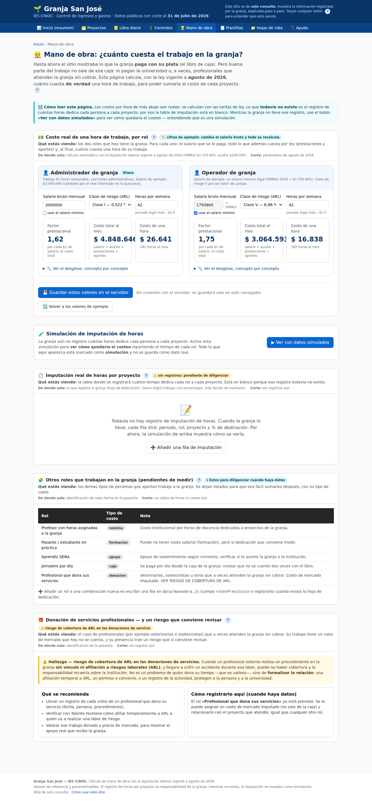

⏱️ Hoja de mano de obra — la regla de las horas
El costo del trabajo humano es el recurso más grande de cualquier granja, pero hoy no está repartido entre los proyectos porque no se registra cuántas horas dedica cada persona a cada uno. Esta hoja es la que empieza a cerrar esa brecha.

La regla de las horas
El principio que hace que el reparto tenga sentido.
Por cada persona, la dedicación se anota en porcentajes que suman 100 % de su tiempo. No se anotan horas sueltas: se anota qué fracción de la jornada se fue a cada proyecto. Así, aunque cambie el salario, el reparto sigue siendo válido.
Ejemplo para el operador: Gallinas 40 %, Codornices 30 %, Cerdos 20 %, tareas generales 10 %. Total: 100 %.
Formato de la anotación
| Persona / rol | Proyecto | % del tiempo |
|---|---|---|
| Operador de granja | Gallinas ponedoras | 40 |
| Operador de granja | Codornices | 30 |
| Operador de granja | Cerdos | 20 |
| Operador de granja | Tareas generales | 10 |
Errores frecuentes
- Que los porcentajes no sumen 100 %. Si suman 80 %, falta declarar el 20 % restante (aunque sea «tareas generales»). Si suman 120 %, alguien está contando el mismo tiempo dos veces.
- Mezclar horas con porcentajes. La hoja es de porcentajes. «8 horas» en la columna de % no significa nada.
- Inventar dedicación. Si no se sabe, se deja en blanco y se anota cuando se sepa. El sitio prefiere un dato faltante a un dato falso: por eso la tabla real está vacía y lo que se muestra es una simulación rotulada.
✅ El día que se registren horas de verdad
La simulación de la pantalla de Mano de obra se reemplaza por los datos reales sin cambiar nada más: el modelo de costo ya está construido y esperando el dato. En ese momento, por primera vez, el costo de cada proyecto incluirá el trabajo de las personas.